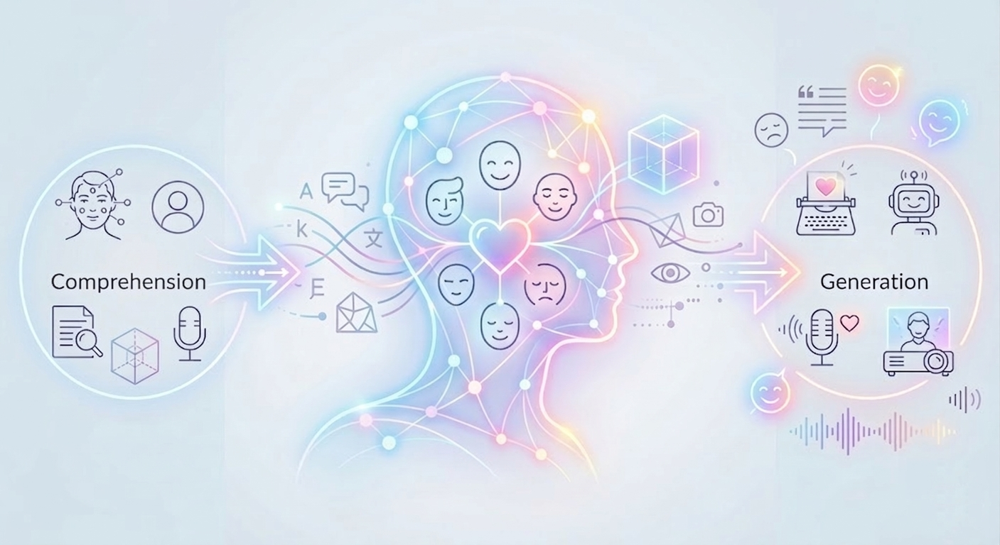
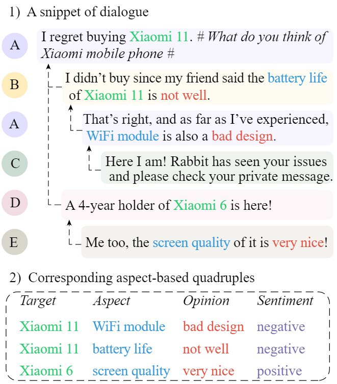
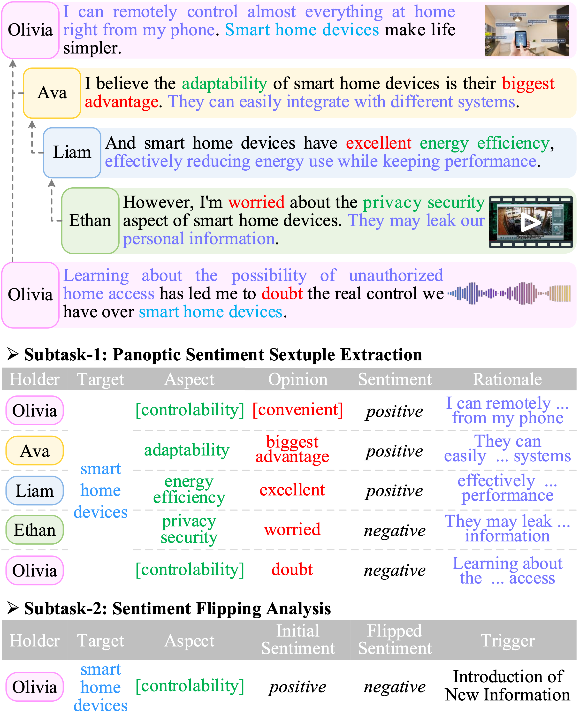
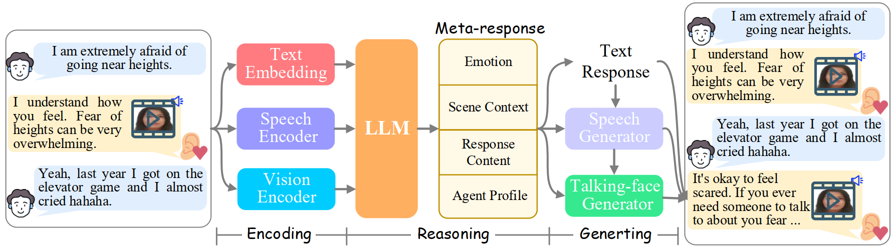
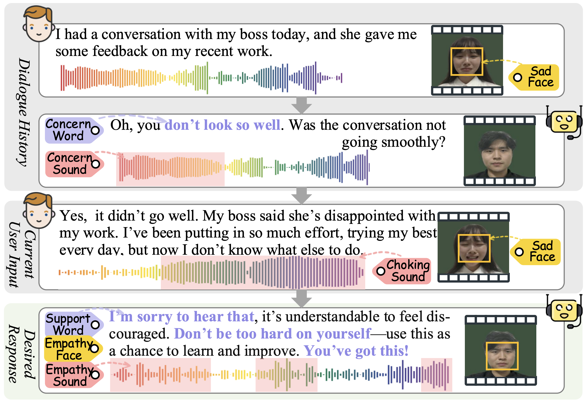
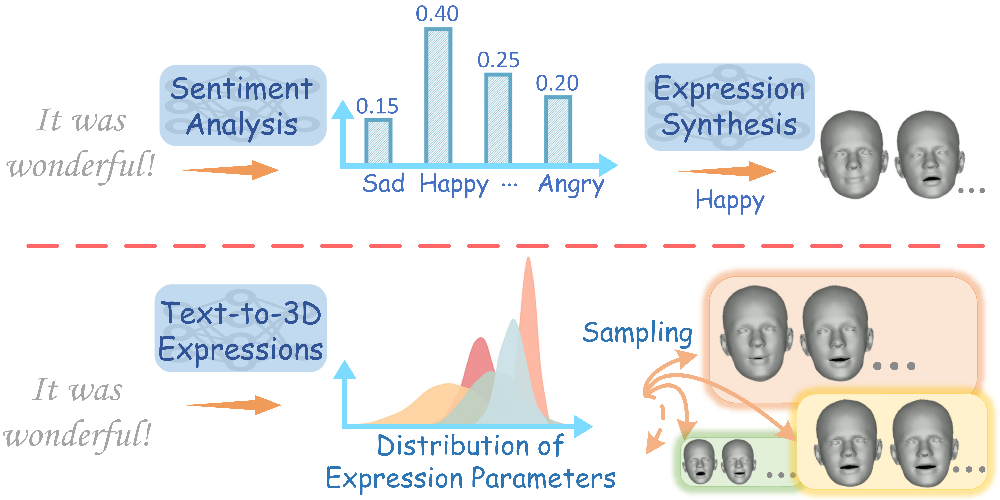
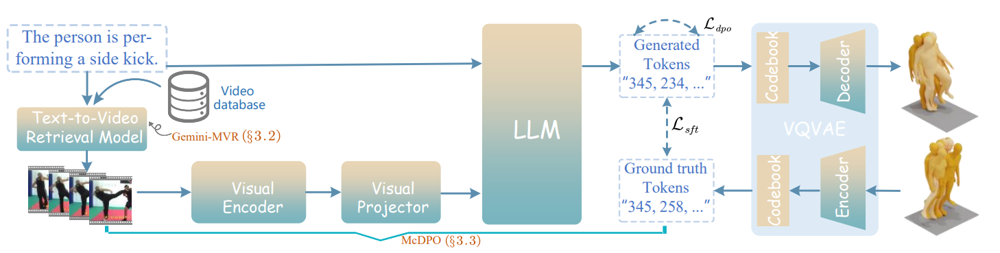

👉🏻 Affective Comprehension
Infer and reason about fine-grained sentiment and emotion from multimodal human signals, dialogue, behavior, speech, face, avatar, vision, and embodied context.
UniCAE
AI should not remain a cold parser of instructions. It should learn to read human feelings, reason about emotional context, and respond with empathy across language, speech, face, avatar, vision, and 3D. UniCAE studies a unified paradigm for both affective comprehension and affective generation.
👉🏻 Affective Comprehension
Infer and reason about fine-grained sentiment and emotion from multimodal human signals, dialogue, behavior, speech, face, avatar, vision, and embodied context.
👉🏻 Affective Generation
Generate emotionally aligned text, speech, facial expressions, avatars, and 3D motion that feel coherent to humans.

Flagship Research
Track A
A first step from sentence-level ABSA toward dialogue-native, fine-grained conversational sentiment understanding.

A broader formulation of sentiment reasoning that treats multimodality, rationales, and sentiment dynamics as first-class citizens.

Track B
An open multimodal empathetic chatbot that turns text-only ERG into embodied avatar interaction.

A benchmark and system for end-to-end multimodal empathetic response generation with authentic speech and avatar video.

Emotional facial expression generation as a missing piece beyond lip synchronization for digital humans.

Retrieval-augmented motion generation that leverages in-the-wild video as emotional and behavioral grounding for 3D motion.

Community
A living survey that systematizes how future emotionally intelligent AI should jointly comprehend, reason, and generate affective content across modalities.
Unified Affective
Comprehension & Generation